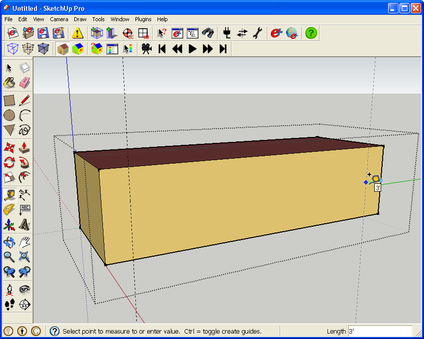
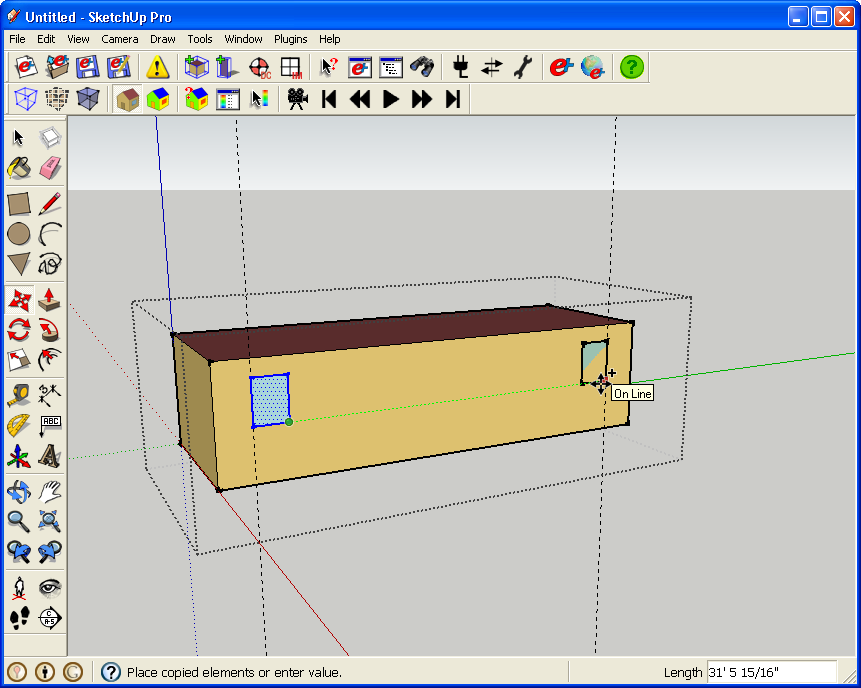
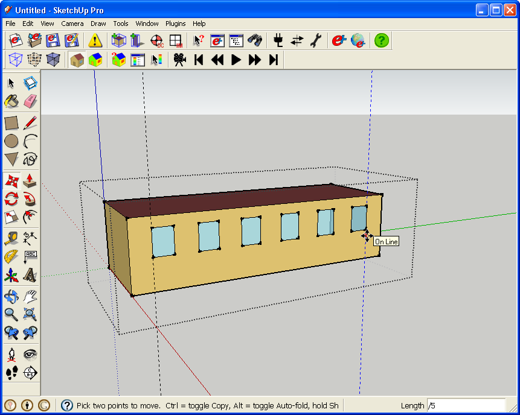

Selection, Modeling, and Inference
Selecting Geometry
- Selecting geometry in SketchUp is quite easy, but you can save a lot of time by using special selection techniques.
- Single-click selects the face.
- Double-click selects a face and the bounding edges.
- Triple-click widens the selection to all connected entities.
- Contextual (right) click to select other entities on the same layer, or with the same material.
- Hold down the "Shift" key to add to or remove objects from your selection. If you pick a selection that had some selected, and some unselected, they will all be reversed.
- Hold down the "Control" key to add to the selection and removes nothing.
- Hold "Control" and "Shift" together to set the selection tool to remove entities from the selection without adding anything.
- Drag a box to select; however, if you create the window from left to right, versus right to left, you see different results.
- Draw your selection from left to right to select only entities that are fully within the box.
- Draw your selection from right to left to include objects that are partially within the box.
Drawing and Modeling
- You can use SketchUp without ever typing in lengths for objects, but you can also enter exact numbers in the "Measurements" box to create or alter entities.
- The measurement box enables you to set the value, which you can change indefinitely. This works as long as you do nothing else in SketchUp until you are finished. This will make more sense with the Multiple Copy/Move, example.
- Push/Pull repeat - If you use the Push/Pull tool to extrude something by a set amount, you can reapply this value to other surfaces to be pushed or pulled by double-clicking on the surface with the Push/Pull tool selected. A useful example of this would be if you push all the walls of your zone in by 12 inches. You may want to do this if you modeled off of the outside of the exterior wall, but now want to model to the inside wall.
- Guide lines enable you to create reference lines to lock new geometry to, but you do not want to clutter your model or alter faces the guide lines cross. Guide lines aid window placement below.

(Credit: David Goldwasser/NREL)
- The Move Tool in SketchUp is also a copy tool that can copy multiple entities simultaneously. Starting with the original window at the left, press the "control" key to change "move" to "copy".

(Credit: David Goldwasser/NREL)
- Type "/5" into the measurement box to place an additional 4 copies equally spaced over the wall (5 new copies plus 1 original).

(Credit: David Goldwasser/NREL)
- Instead of placing the copy on the other side of the building, place it next to the first window.

(Credit: David Goldwasser/NREL)
- Type "*5" instead of the "/5" to make the same number of copies, but this time each copy is as far away from its neighbor as the first one.

(Credit: David Goldwasser/NREL)
- Look at status bar tips for good, otherwise undocumented information that is specific to your current tool.
Inference Engine
- SketchUp has an extensive inference engine that tries to help snap to useful locations. This is well covered on the online inference documentation.
- The Shift key is very important as you use inferences, as it can lock you into to your current inference.
|